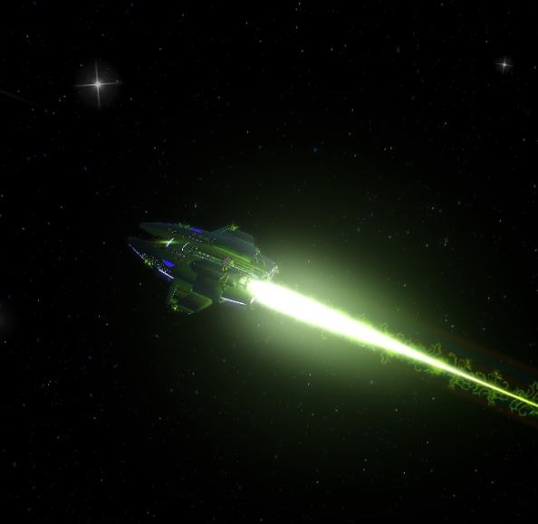

La flota estelar agradece tus esfuerzos
en el campo de batalla, tus restos fueron
teletrasportados hacia la nave y seran
despedidos hacia el espacio exterior en
una capsula ya que estas infectado con
nanobots y seras convertido en un enemigo.
reintentar
web del juego